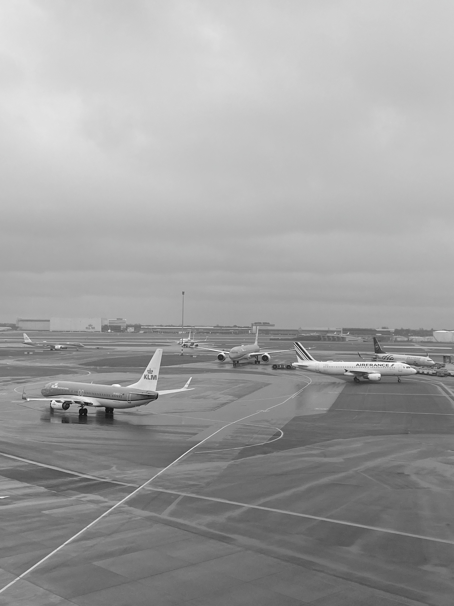

Welcome! 환영!
Abstract
This thesis critically examines the phenomenon in which essential human mobility is controlled by material and technological systems through spatial boundaries, modern surveillance society, and digital infrastructure. It explores how airports, automated doors, digital authentication, and technologies developed within social structures define and systematize individuals’ mobility instincts, identities, and exclusion methods. To achieve this purpose, this thesis will first discuss borders and the concept of ‘non-place’. Second, it will examine Bruno Latour's actor-network theory, focusing on how doors facilitate approval and exclusion, as well as the role of transparent materials in their dual function of visibility and obstruction. Finally, identity and mobility instincts are shaped by socio-economic and technological changes, extending into both digital and physical realms under systems of control. It highlights how datafied identities enable surveillance through classification criteria, ultimately leading to a ‘control trap’ where convenience reinforces constant monitoring.Introduction
I arrive at an unfamiliar airport. I take the wrong way and go out without finding my luggage. I ask a staff member for help, and she simply directs me to "Find Door 16," and then turns left. I find Door 16—a deserted area with only an intercom to call for assistance. After 30 minutes of waiting, the jaded staff came to me and rechecked all of my documents, bags, and body. Eventually, two doors open, and I am back in the same area I just left. As one passenger who walks against the flow of a predetermined path, I feel like an error in the system. In a new land, passing through countless doors in a short period until I am granted entry. This experience made me realize that ‘doors’ are far more than simple entryways. They transform into potent symbols of duality, representing both locking and unlocking, movement and stillness, freedom and restriction. Moving into the unique space of the airport is not simply about crossing space; I think deeply about how objects regulate our movements, and this creates a paradoxical tension. In the modern world, mobility is more than just physical movement; it is a multifaceted system shaped by complex interactions between human and non-human elements. Airports are a microcosm of this structure, representing a multiplicity of meanings and experiences created by the intertwining of people, materials, and technology. In this context, it explores the fundamental questions of movement and the space of doors and boundaries.Keywords
Airports · Border · Datafeudalism · Identity · Inequality · Migration · Mobility · Surveillance capitalism · Technofeudalism
